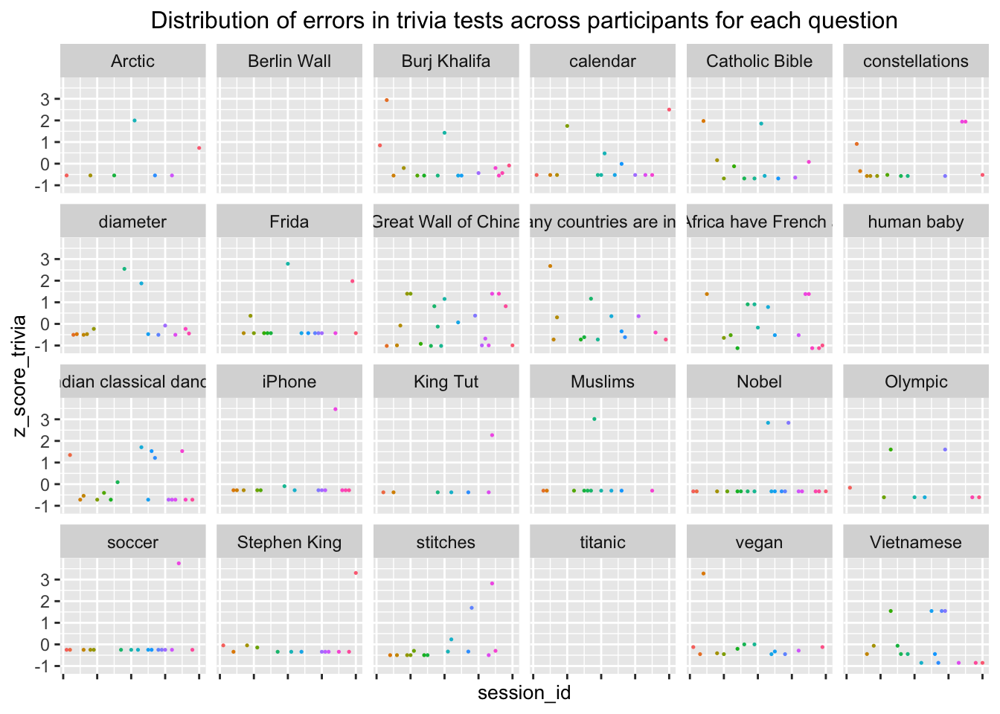

Effects of Initial Curiosity and Prediction Error on Explicit and Incidental Memory Formation
Introduction
The present study explores the connection between curiosity and memory, where recent evidence suggests that higher levels of curiosity leads to improved memory of that information (Kang et al. 2009; Gruber, Gelman, and Ranganath 2014; Lieshout, Lange, and Cools 2020). This supports the intuition that the more curious a person is about something, the better they are at learning and remembering it. When applied to an educational setting, this means instructors may find that embedding highly specific, hard-to-remember information in a context where students are curious may lead to better overall retention of the material.
In behavioral experiments testing the correlation between curiosity and memory, participants are typically shown a series of trivia questions and their answers, then tasked to recall the answers to the questions after a period of time. Evidence from an example of these studies by (Kang et al. 2009) found that participants were better able to recall answers to questions that they were highly curious about, even after a 11-16 day period. These behavioral results are also supported by neuroscientific evidence: Gruber et al. (Gruber, Gelman, and Ranganath 2014) conducted an fMRI study showing that when there is increased brain activity in areas related to curiosity, there is also increased anticipatory activity in areas relating to memory. While the present study does not build on this neuroimaging work, it provides powerful supporting evidence for theories that seek to connect curiosity and memory at the neurological level. Additionally, Gruber et al. (Gruber, Gelman, and Ranganath 2014) found that improved memory due to high levels of curiosity not only applies to material being activity learned, such as answers to trivia questions shown, but also to any material incidentally encountered during the learning process. In their case, these were faces that appeared between the trivia questions and answers, and participants were asked to recognize them upon completion of the experiment.
After considering these different studies about curiosity and memory, there are some interesting comparisons that we can make: Gruber et al., (Gruber, Gelman, and Ranganath 2014)‘s study only tested for immediate memory retention, as opposed to the longer time periods utilized by Kang et al. (Kang et al. 2009), and Gruber et al., (Gruber, Gelman, and Ranganath 2014)’s incidental stimuli were restricted to faces. Additionally, the two groups interpreted their neuroscientific data differently: Gruber et al. (Gruber, Gelman, and Ranganath 2014)’s team attributed midbrain and nucleus accumbens activation to the anticipation of an answer and curiosity, while Kang et al. (Kang et al. 2009)’s team observed that the same activations were heightened for incorrect answers, thus tying them to prediction errors (the difference between a participant’s prediction and the correct answer). The prediction error account is further developed in a report by Marvin et al. (Marvin and Shohamy 2016), which hypothesized that information prediction error is the essential factor by which curiosity drives memory formation. This would indicate that people remember information better if it was initially associated with a larger prediction error (they got it very wrong to start and then were like ’woah!’). This ‘woah’ might derive from the connection between information prediction error and surprise: when people are confronted with unexpected events, they experience surprise (Sumiya and Katahira 2020). Synthesizing across these studies, the mechanism by which curiosity affects memory formation remains unclear: is it initial curiosity about the answer itself, or the large prediction error generated by an incorrect guess that ultimately drives improved memory formation?
The present study seeks to clarify and challenge these existing findings by 1) testing whether the positive correlation between curiosity and memory can be replicated, and 2) isolating the most relevant factor by which curiosity motivates memory formation for both explicit and incidentally presented material. We hypothesize that the most relevant factor could either be the subject’s initial curiosity about the topic, or a more downstream prediction error (and associated surprise). We also introduce the subject’s prior knowledge as a possible third, underlying factor explaining the connections of both initial curiosity and prediction error to memory. High prior knowledge about a topic might actually decrease curiosity and prediction error, and thus, be implicated in an interesting way with their memory of it later on. Finally, we chose to employ a different incidental memory stimulus than Gruber et al. (Gruber, Gelman, and Ranganath 2014), as we were skeptical about how inconspicuous a human face could be when presented in between a trivia question and its answer. Thus, our design chose to use colorful patterns with no apparent meaning or subject instead, acting as the back of a playing card flipped to reveal a trivia answer.
Hypothesis
Hypothesis 1: Higher initial curiosity leads to better memory of the answer to a trivia question (explicit memory) and a colorful pattern on the back of the trivia card (incidental memory).
Hypothesis 2: A larger prediction error after guessing the answer to a trivia question leads to better memory of the answer to a trivia question (explicit memory) and a colorful pattern on the back of the trivia card (incidental memory).
Hypothesis 3 (exploratory): Prior knowledge may underlie these factors, such that high prior knowledge correlates to lower curiosity and prediction error, and thus leads to poorer memory of the answer to a trivia question (explicit memory) and a colorful pattern on the back of the trivia card (incidental memory).
Methods
Pre-Registration & Open Materials
All stimuli, experiment scripts, data, and analysis scripts are available on the Open Science Framework at https://osf.io/v35df/. The pre-registration for this study is also available at https://osf.io/w3qh4. This study was approved by the Vassar College Institutional Review Board, and all participants provided informed consent prior to their participation.
Participants
Participants were 40 individuals from the United States (X female, X male) between X and X years of age (M = X, SD = X) recruited via Prolific, a platform that enables researchers to carry out fast, reliable, and high-quality online data collection with a diverse sample. To rationalize this sample size of 40, we determined that our study would take approximately 20 minutes to complete and we had $160 in our budget. Thus, having a sample size of 40 allowed each participant to receive an acceptable pay of $4 upon completion of the experiment, regardless of their performance on the tasks.
Stimuli
In order to conduct this experiment, we needed to generate 30 trivia questions with numerical answers to explore explicit memory, and 40 colorful abstract patterns to study incidental memory. In order to generate the trivia questions, we used ChatGPT to output ten broad categories of trivia, and we got: science/technology, art/entertainment, literature, nature/animals, culture, history, religion, geography, food, and sports. We then instructed ChatGPT to generate trivia questions with strictly numerical answers based on each of these categories, and selected three questions for each. All question-answer pairs were face-checked. We made an effort to maximize the diversity in difficulty, length of answer and cultural origin for our final set of questions. These 30 questions were randomly ordered and presented to participants during the experiment.
In order to generate the colorful patterns, we downloaded a set of 101 colorful abstract patterns from a paper made open source by the researchers (Schapiro, Kustner, and Turk-Browne 2012). We then used DALL-E from Open AI to blow up all the images to the same size by repeating the patterns within them. 30 out of the 40 would appear on the cards presenting each trivia answer as target patterns, and the remaining 10 were used as distractor patterns in the implicit memory test rounds, where participants have to correctly choose the pattern they had seen earlier during the trivia trials.
Procedure
Participants were instructed to complete this experiment on a laptop or computer, and upon clicking the link in Prolific, they were given some preliminary instructions: here is a trivia question, 1) predict the answer, 2) rate how much you already know about the topic, 3) rate how much you want to know the answer; and then a card will flip over to reveal the correct answer. Participants then had the opportunity to complete one practice round to confirm that they understood the instructions. In the practice round, and in the ensuing 30 experimental rounds, participants were presented with a trivia question such as, “How many double stitches does a baseball have?” and asked to type in a (numerical) prediction of the answer. After responding, on the next screen they were asked, “How much do you know about this topic?” and asked to rate their knowledge on a Likert scale of 0 (Nothing at all) to 5 (LIKE, A LOT). On the following screen, they were asked, “How much do you want to know the answer to this question?” and asked to rate their curiosity on a Likert scale of 0 (I don’t care) to 5 (TELL ME!). If the participant failed to type in an answer (for the prediction question) or click a rating (for the knowledge or curiosity question), they were unable to continue to the next round. This ensured that participants could not simply click continue through the entire experiment without making any predictions or ratings.
After these three questions were complete, a card with a random, colorful abstract pattern appeared. After 2000 ms, it automatically turned over to reveal the correct answer. This ensured that every participant viewed each pattern for the same amount of time (eliminating a viewing-time confound for the later memory test). The trial then ended and the participant could press any key to continue to the next trial:

After the 30 trials were complete, participants were met with another (surprise!) instruction screen. For the next 10 trials, participants were presented with two colorful, fractal patterns and asked to select which of the two they had seen previously. During this incidental memory test, they clicked ‘f’ to select that they had seen the left image or ‘j’ to select that they had seen the right image. Following each selection, they were presented with immediate feedback: Correct! or Wrong answer, as seen in Figure 3.

Following the 10 incidental memory trials, participants were met with another (surprise!) instruction screen (last one, I promise). For the next 10 trials, participants were presented with a trivia question that they were previously asked, but that they had guessed incorrectly on. They typed in their prediction as in the first round, and they immediately received the correct answer and feedback about how close their guess was. For example, if the participant guessed 43 for the question, “How many single hand gestures, or mudras, are used in Indian classical dance?,” they would be presented with a screen indicating that the correct answer is 28, the difference between their answer and the correct one (their prediction error) is 15, and an unsolicited comment about their performance: “Not even close… do better next time!”, as seen in Figure 4. After these 10 rounds were complete, participants were thanked for their engagement and sent back to the Prolific page to receive their $4 pay.

Results
Out of the 40 participants from Prolific, no participant correctly predicted over 20 questions in the first part of the experiment and no participant showed invariable responses to the predicting and likert-scaling (curiosity and prior knowledge) part of the experiment. Therefore, all 40 participants were included in the following data analysis.
Explicit memory formation was evaluated by how well each participant remembered the correct answer to the questions they had already encountered before in the last 10 trials. Namely, the differences between the answers entered by participants and the correct answers to the questions were calculated, where the bigger the difference the farther they were from the correct answer and 0 meant the participants entered a correct answer. The incidental memory was evaluated by how well the participants recognized the fractal patterns they had seen with the presence of another pattern they had not seen before in the first 30 trials of the experiment. If the participant chose the pattern they had seen before, their response was given a TRUE value, and FALSE otherwise. The boolean value was then encoded into 1 and 0 respectively.
Prior to performing data analysis, we recognized that we needed to perform some standardizations for our independent and dependent variables in order to ensure that our comparisons were valid. Specifically, we standardized the prediction error, curiosity, prior knowledge, and explicit memory responses using z-scores and the implicit memory responses by coding a correct pattern recognition as 1 and an incorrect pattern recognition as 0. The z-scores and subsequent explicit and implicit memory regressions follow.
Z-Scores
Prediction Error
To investigate the effect of prediction error on both explicit memory and incidental memory, the prediction error (information prediction error) of each participant on each question in the first 30 trials was calculated by subtracting the prediction they entered when a question was shown from the correct answer to that question. Since only the size of the error is essential, absolute values of the subtractions were taken. There was one participant whose prediction on a particular question was unreasonably large, which made the subtraction of it from the correct answer uncomputable in R. Therefore, the prediction error was manually calculated to be 437289472301 and was filled into the data. Due to the inconsistency in the number of figures in the answers to those trivia questions, standardization on the prediction errors was performed by calculating the z-scores of each participant’s prediction error on each question, compared to other participants. For each trivia question, each participant’s prediction error on the question was calculated by the difference between their prediction error and the mean prediction error of all participants on that question divided by the standard deviation of prediction error across participants. The distributions of all participants’ z-scores for prediction errors for each question were plotted in Figure 1., with the x-axis being 39 distinct participants and the y-axis being their information prediction error z-scores.
Similarly, the differences between the answers entered by participants and the correct answers in the last 10 trials of the experiment were standardized, and the distributions of all participants’ z-scores for their errors in each of the 10 questions were plotted in Figure 2., with the x-axis being 39 distinct participants and the y-axis being their trivia z-scores. However, since the 10 trivia questions were randomly generated for each participant, only 24 questions were tested across all participants.

Curiosity
To investigate the effect of the level of curiosity on both explicit and incidental memory, we retrieved each participant’s curiosity rating for each question when they first encountered it. We then converted these ratings into z-scores based on their curiosity of each question compared to their mean curiosity rating across all questions. This was necessary because it is not meaningful to compare a participant’s curiosity for a question with others’ curiosity ratings for the same question. Instead, it is more meaningful to compare the participant’s curiosity for the question with their own mean curiosity across other questions, since curiosity is a concept of internal motivation – others’ internal curiosity cannot affect the participant. A participant’s curiosity effects on their memory formation are therefore relative to its own baseline values, not to others’ curiosity values.
The distributions of each participant’s curiosity z-scores are plotted in Figure 7., with the forty small plots representing the forty participants, every x-axis representing the 30 trivia questions, and every y-axis representing the participants’ curiosity z-scores. There were four participants that put the same curiosity rating for every question, generating zero variability in their data and therefore no z-scores:

Mixed Effects Models
Explicit Memory
Two mixed effects models were conducted on the effects of curiosity, information prediction error and prior knowledge — one on explicit memory and the other on incidental memory. In the explicit memory model, we found no significant effect of either participants’ curiosity ratings (p = 0.514) or their IPEs (0.053) on their trivia recall accuracies as a measure of explicit memory. We did find a significant effect of their prior knowledge ratings (p = 0.027), as well as a significant interaction effect between prior knowledge and IPE (p = 0.006), on explicit memory. In other words, the effect of IPE on the explicit memory performance depends on the level of prior knowledge, and the effect is stronger for participants with higher levels of prior knowledge. Curiosity, on the other hand, does not depend on the participant’s level of prior knowledge to influence the performance in recalling the correct answers to the trivia questions (p = 0.853).
| z_score_trivia | |||
|---|---|---|---|
| Predictors | Estimates | CI | p |
| (Intercept) | 0.03 | -0.13 – 0.19 | 0.683 |
| z score curiosity | 0.04 | -0.09 – 0.17 | 0.514 |
| z score IPE | 0.13 | -0.00 – 0.27 | 0.053 |
| z score prior knowledge | 0.18 | 0.02 – 0.35 | 0.027 |
| z score curiosity × z score IPE |
0.02 | -0.13 – 0.16 | 0.827 |
| z score curiosity × z score prior knowledge |
-0.01 | -0.16 – 0.14 | 0.853 |
| z score IPE × z score prior knowledge |
0.23 | 0.07 – 0.39 | 0.006 |
| (z score curiosity × z score IPE) × z score prior knowledge |
0.05 | -0.06 – 0.16 | 0.371 |
| Random Effects | |||
| σ2 | 0.73 | ||
| τ00 session_id | 0.10 | ||
| τ11 session_id.z_score_curiosity | 0.00 | ||
| τ11 session_id.z_score_IPE | 0.00 | ||
| τ11 session_id.z_score_prior_knowledge | 0.00 | ||
| ρ01 | 1.00 | ||
| 1.00 | |||
| 1.00 | |||
| N session_id | 36 | ||
| Observations | 253 | ||
| Marginal R2 / Conditional R2 | 0.060 / NA | ||
The distribution of z-scores for the errors in the last 10 trivia questions against the z-scores of prior knowledge was plotted in Figure 9 with a best-fit line.
Incidental Memory
In the incidental memory model, we failed to find any significant effect of participants’ curiosity ratings (p = 0.987), IPEs (p = 0.972), and the level of prior knowledge regarding the questions (p = 0.820) on their performance in recalling the incidental patterns they have seen before in the first part of the experiment. Nor were any interactions between these independent variables found to have a significant effect on the incidental memory.
| fractal_correct | |||
|---|---|---|---|
| Predictors | Estimates | CI | p |
| (Intercept) | 0.77 | 0.71 – 0.82 | <0.001 |
| z score curiosity | -0.00 | -0.05 – 0.05 | 0.987 |
| z score IPE | -0.00 | -0.07 – 0.06 | 0.972 |
| z score prior knowledge | -0.01 | -0.06 – 0.05 | 0.820 |
| z score curiosity × z score IPE |
0.03 | -0.02 – 0.09 | 0.218 |
| z score curiosity × z score prior knowledge |
0.00 | -0.05 – 0.05 | 0.872 |
| z score IPE × z score prior knowledge |
-0.02 | -0.08 – 0.05 | 0.559 |
| (z score curiosity × z score IPE) × z score prior knowledge |
-0.01 | -0.07 – 0.05 | 0.743 |
| Random Effects | |||
| σ2 | 0.17 | ||
| τ00 session_id | 0.01 | ||
| τ11 session_id.z_score_curiosity | 0.00 | ||
| τ11 session_id.z_score_IPE | 0.00 | ||
| τ11 session_id.z_score_prior_knowledge | 0.00 | ||
| ρ01 | -0.33 | ||
| -0.01 | |||
| 0.07 | |||
| N session_id | 36 | ||
| Observations | 360 | ||
| Marginal R2 / Conditional R2 | 0.009 / NA | ||
Discussion
This study aimed to investigate the effects of prediction error as well as the effects of curiosity on memory performance, both explicitly and incidentally. However, the study failed to provide support for both hypotheses. The mixed effects model failed to explain the variability in the performance of explicit memory and incidental memory based on curiosity, IPE and prior knowledge. The only significant effects found were of prior knowledge on explicit memory and the interaction effect between prior knowledge and IPE on explicit memory respectively,
Since significant previous research suggests that curiosity affects explicit memory of a stimulus (Kang et al. 2009; Gruber, Gelman, and Ranganath 2014; Fernández, Boccia, and Pedreira 2016), there are a few potential explanations for why this study did not find this effect. To start, in the second (surprise!) round of trivia questions (our operationalization of explicit memory), participants received a random selection of the thirty questions they had already seen, but these were not restricted to questions that they had initially provided incorrect guesses for. This means for many questions in the trivia recall round, the participants’ answers are not actually reflecting memory formation from seeing the questions the first time in the first part (trivia) of the experiment. Since they may have gotten the question right the first time around, they may instead have known about it and its answer prior to the experiment. Notably, this unintentional experimental design flaw likely impacted our analysis of prediction error’s effect on explicit memory as well, since the prediction is not actually a prediction, but already an accurate recall of the answer.
Additionally, while we deliberately sought out trivia questions that 1) had numerical responses, 2) varied in the number of digits in the response and in relative difficulty, 3) pertained to a broad number of categories, including: science/technology, art/entertainment, literature, nature/animals, culture, history, religion, geography, food, and sports, and 4) were representative of the diverse backgrounds and cultures of people in the United States potentially participating in the experiment, we failed to consider that there were three pairs of questions with the same numerical responses. For example, the answers to “How many native species of kangaroos are found in Australia?” and “How many main islands make up Japan?” were both 4. Due to our blunder of not labeling every question in the trivia recall round through the stimulus program, we had to add in those labels based on their correct answers post-hoc, so we could not correctly label those that share the same correct answer as another. This means when we attempted to match participants’ numerical responses in the second round of trivia questions to their initial curiosities about that question, we were also unable to do so for the six questions with duplicate responses. Furthermore, we did not get z-scores for the following three questions because every participant who received these in their second round of questioning got them correct, and thus the standard deviations were zero: “How many bones is a human baby born with?” (300 because I know you’re curious!), “What year did the Berlin Wall fall?” (1989; maybe you knew that one), and “What year did the Titanic sink?” (1912; maybe you knew that one too). Interestingly, the standard deviations for these questions were not zero in the initial testing round, indicating that they were certainly not ‘giveaway’ questions. While we cannot be sure as to why this may have occurred, we predict that for the Berlin Wall and Titanic questions, participants who initially got it wrong were somewhat close to the correct answer (maybe something of a tip-of-the-brain experience), and, thus, when presented with the opportunity to guess again, got it correct. This is unfortunate, but possible (even likely!) when analyzing a phenomenon like memory that is affected by a lot more than just curiosity. However, we do not think this is the case for Baby Bones, and it is even possible that all of these people were initially really curious about this question, later got it correct; and then, much later, we realized that the lack of standard deviation meant that we did not get a z-score for a question that might have been really valuable in our analysis of explicit memory, both for curiosity and prediction error.
In terms of our methodological choices for curiosity, we assessed participants’ curiosity using a Likert Scale presented immediately after one assessing prior knowledge. After a participant selected a number for prior knowledge, the next screen, measuring curiosity, automatically began with the same number selected. This could have resulted in a situation where a participant who wanted to save time was inclined to keep the same selection for curiosity, even if it was actually different from their prior knowledge estimation. And, even if they were not in a damn rush to get their $4, making a selection after a choice has been already made is very different from making a clean selection. It feels like ‘changing your answer,’ even though this is curiosity, not your sixth grade social studies test. These are some of the possible reasons why we did not find an (expected) effect of curiosity on explicit memory, and a (less expected, but still possible) effect of prediction error on explicit memory.
Finally, previous research that found an effect of curiosity on incidental memory (Gruber, Gelman, and Ranganath 2014), used faces as their incidental stimuli, while we used colorful fractal images. We believed that faces were too obvious as an incidental stimulus, and that using a colorful, flippable card on a bright blue background would be less obvious (but not totally ignorable: more like medium-obvious, of course). It is impossible to obtain a perfectly ‘incidental’ stimulus, and, thus, it is impossible to determine whether the lack of a significant effect of curiosity or prediction error on incidental memory in this study was due to the choice of stimulus, other timing, background, or participant confounds, or because curiosity does not, in fact, affect incidental memory.
In addition to the above considerations, there are a number of future research studies that can be conducted to further investigate the possible effects of prediction error and curiosity on memory. A research team with more funding and the ability to carry out in-person research could easily improve the power of this study by utilizing a larger sample size, generating an experiment with many more questions in all three sections, and re-recruiting participants a few days (rather than ten minutes) later for the memory assessment. As always, an independent, unbiased replication of this study is also extremely valuable in determining the validity of our findings. Finally, multiple types of incidental memory stimuli must be considered to determine which, if any, are affected by curiosity. We cannot declare that curiosity affects incidental memory if this is only the case for faces, or another very particular type of stimulus. Ultimately, this kind of exploration has the capacity to expand our understanding of how prediction error, curiosity, and memory fit into broader research about human information processing and decision making.